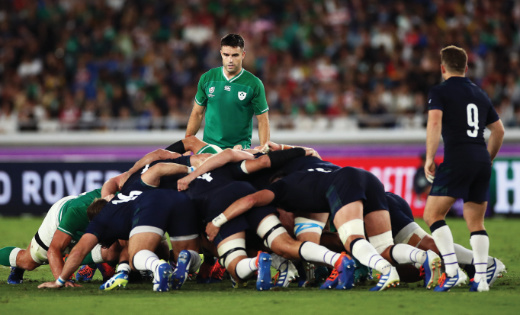

Welcome!
In 2009 the World Rugby member unions identified integrity, passion, solidarity, discipline and respect as the defining character-building characteristics of rugby. These are now collectively known as the World Rugby values and are incorporated within the World Rugby Playing Charter, a guiding document aimed at preserving rugby’s unique character and ethos both on and off the field of play.
The core values enable participants immediately to understand the character of the games and what makes it distinctive as a sport which is played by people of all shapes and sizes.
Law of the game
Welcome to the World Rugby Laws of Rugby Union. Here, you can read the laws and watch explanatory video examples to build your understanding of how the laws are applied on the field of play. The laws are available in 12 languages and have specific sections on:
- The playing charter – the basic principles which relate to the playing, coaching and application of law
- Specific definitions which explain terminology
- Each of the 21 laws
- Detail on the variations for under-19, sevens and 10s
- Video and still images of match official signals
- Application guidelines which have been issued by World Rugby to help referees to apply specific laws
- A catalogue of law clarifications whereby unions have made specific requests
- Modified forms of the game such as beach, tag and XRugby..
Rugby's Values
In 2009 the World Rugby member unions identified integrity, passion, solidarity, discipline and respect as the defining character-building characteristics of rugby. These are now collectively known as the World Rugby values and are incorporated within the World Rugby Playing Charter, a guiding document aimed at preserving rugby’s unique character and ethos both on and off the field of play.
INTEGRITY: Integrity is central to the fabric of the game and is generated through honesty and fair play.
PASSION: Rugby people have a passionate enthusiasm for the game. Rugby generates excitement, emotional attachment and a sense of belonging to the global rugby family.
SOLIDARITY: Rugby provides a unifying spirit that leads to life-long friendships, camaraderie, teamwork and loyalty which transcends cultural, geographic, political and religious differences.
DISCIPLINE: Discipline is an integral part of the game both on and off the field and is reflected through adherence to the laws, the regulations and rugby’s core values.
RESPECT: Respect for team-mates, opponents, match officials and those involved in the game is paramount.
Training and Education
World Rugby provides Training and Education opportunities for a wide range of participants across all areas of the game.
Whether you are a Player, Parent, Coach, Match Official, Medic/First Aider or Administrator, there are programmes specifically designed to help you to learn and develop in your role.
We support our member unions by providing a blended learning portfolio of online learning modules and face-to-face courses across seven strands in multiple languages.